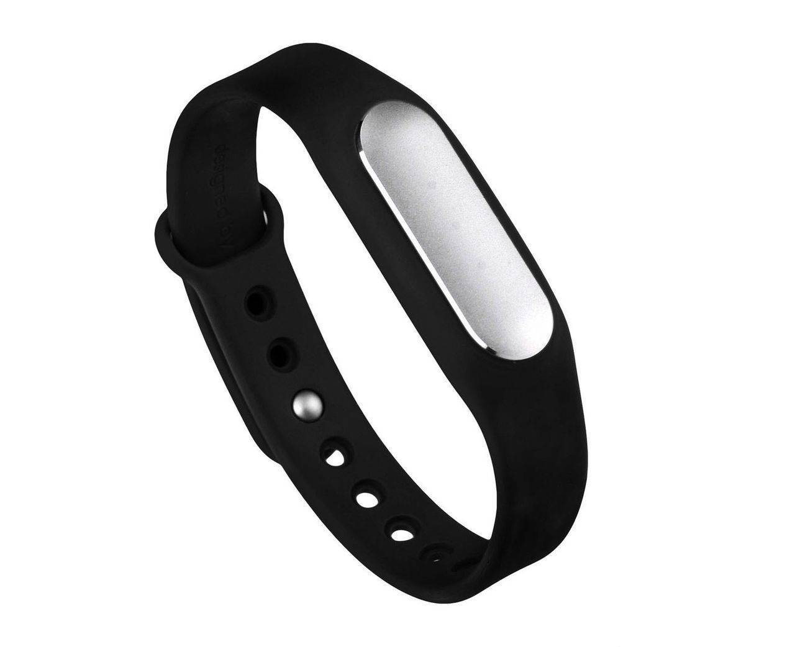
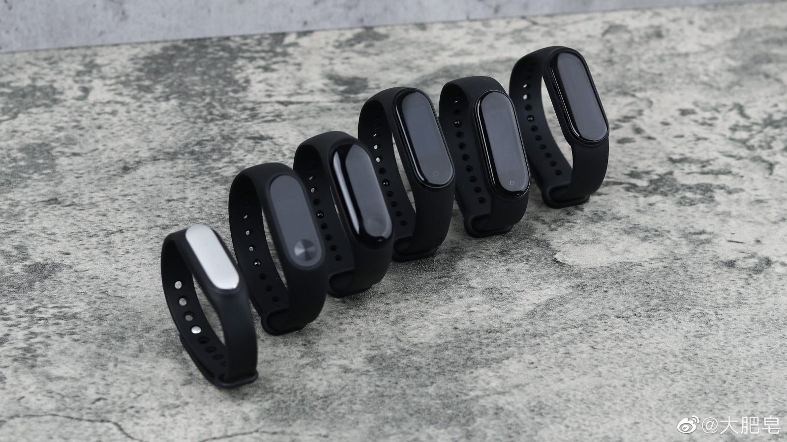
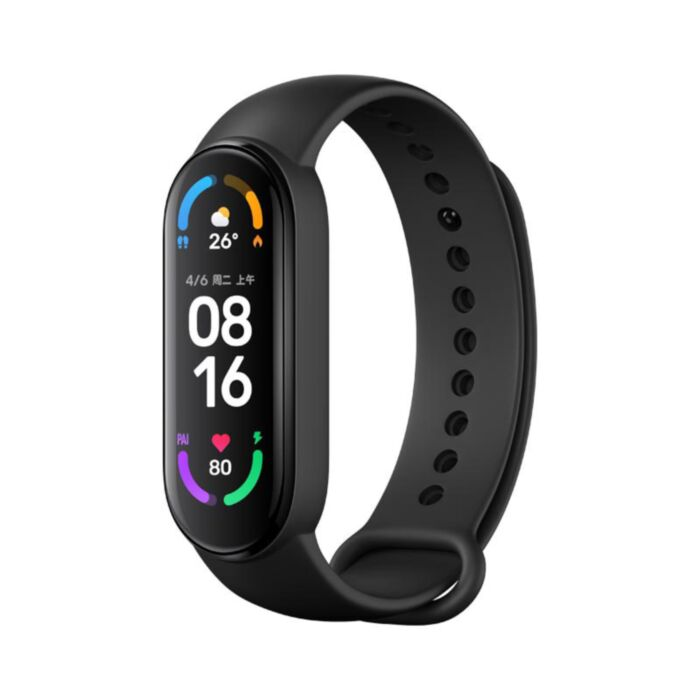

xiaomi
Xiaomi Mi Band is a wearable activity tracker produced by Xiaomi, unveiled during a Xiaomi launch event on 22 July 2014. This article is mainly about the original Mi Band; later versions have separate articles.
Design
The Mi Band resembles a bracelet in its design, and can be worn on either hand. The band's location can be set using the official Mi Band app called Mi Fit, later replaced by Mi Health.
The band contains the core tracker which is around 9 mm thick, and 36 mm in length. It is inserted into a TPSiV wristband, which is hypoallergenic and has anti-UV and anti-microbal properties. The tracker is inserted into the charger module, which can be connected to a 5.0 V external power source. It is also called "Xiaomi Fit".
2015



2021
